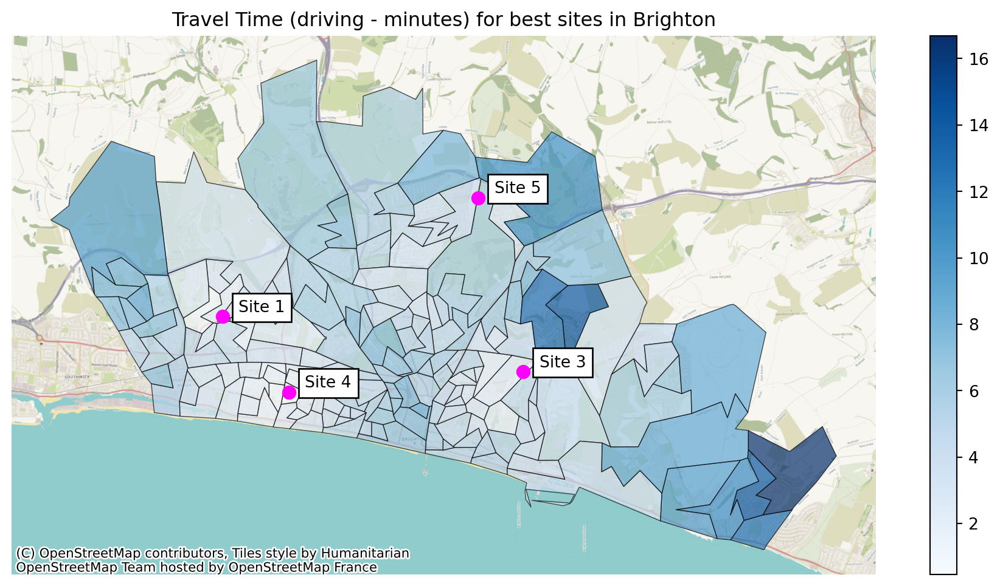

class FacilityLocationObjective:
def __init__(self, demand, travel_matrix, merge_col, demand_col):
'''
Store the demand and travel times
Args:
demand: pd.DataFrame:
travel_matrix: pd.DataFrame:
'''
self.demand = demand.set_index(merge_col)
self.travel_matrix = travel_matrix.set_index(merge_col)
self.demand_col = demand_col28 Using code to solve facility location problems
Right - now we know the combinations we want to test and how long it takes to get to each clinic location, we’ll need some sort of demand figures.
28.1 Demand data
Chances are your demand isn’t spread evenly across your potential service user catchment area.
- Maybe certain LSOAs have more people of childbearing age, so maternity and paediatric services will get more demand from those areas
- Maybe certain LSOAs have an older population, so stroke services are more centred around there
- Maybe other LSOAs have a higher incidence of obesity, so you might expect more demand for type 2 diabetes services and retinopathy clinics
Your demand data can be formatted quite simply!
You just want to make sure that you’re using the same level of location data as in your travel matrix (e.g. they need to both use LSOA, or both use postcode sectors - not a mixture)
Warning
You might use historic demand figures as your starting point.
But always consider…
- If you seem to have areas with no historic demand, is this actually a pattern, or is it just that the historic numbers are small and there’s an element of chance?
- Is there some preexisting bias or issue with access that you might be perpetuating by using the historic figures?
How can you deal with these issues?
If you’re using historic data, can you bring in more years?
Alternatively, you could explore what happens when you just weight demand by the number of people in each LSOA.
If your service only covers a certain age range, you can find LSOA-level figures estimating the proportion of the population in that age group.
You might also just make predictions of demand based off something else. - Number of people in a target age demographic or of a particular gender in your LSOAs, multiplied by some factor - (e.g. 20% of women aged 18-34)
Just always consider whether what you’re doing is
- appropriate
- sensible
- transparent
- justifiable
Make it clear what data you have used and why!
Make the limitations of your conclusions explicit.
28.2 Evaluating the weighted average travel time
Right! We’ve got everything we need - except a way to evaluate the weighted average travel time…
Cast your mind back many many slides - when we present our options, we want to give more weight to the travel times from areas that have higher demand.
Let’s write some code to do this.
It’s something we’re going to want to reuse quite a lot - so we can turn it into a class with…
Attributes
- our travel dataframe
- our demand dataframe
Methods
- Evaluate a solution
- Limit the travel dataframe to a subset of candidate locations
- Work out the smallest value per location (the ‘minimum cost’)
- Return a dataframe with demand and min cost per region
- Return the weighted average for the solution
- Return the unweighted average for the solution
- Return the maximum travel time for any locations in the solution
The FacilityLocationObjective code is modified from the Metapy library created by Tom Monks
https://github.com/health-data-science-OR/healthcare-logistics/tree/master/optimisation/metapy
28.2.0.1 The init method
demand is our dataframe containing demand sources (e.g. LSOAs) as rows and the demand (e.g. yearly patients coming from that LSOA) as the single column
merge_col is the name of the column that is consistent between our demand and travel dataframes
travel_matrix is the dataframe with demand sources as rows and potential service locations as columns, with the travel cost (time) as the values in the cells
demand_col is a string referring to the column that contains the demand value in the demand dataframe
28.2.0.2 The evaluate_solution method
This method, given a list of sites in the form of their column indices (e.g. [1, 4, 5] for sites 2, 5 and 6), will return a dataframe with the demand and minimum travel time per row for this potential solution.
def evaluate_solution(self, site_list):
'''
Args:
site_list: list: column indices of solution to evaluate
(to apply to travel matrix)
Returns:
Pandas dataframe to pass to evaluation functions
'''
active_facilities = self.travel_matrix.iloc[:, site_list].copy()
# Assume travel to closest facility
# Need to drop the column that contains
active_facilities['min_cost'] = active_facilities.min(axis=1)
# Merge demand and travel times into a single DataFrame
problem = self.demand.merge(active_facilities,
left_index=True, right_index=True,
how='inner')
return problem.reset_index()28.2.0.3 The generate_solution_metrics method
This method, given a list of sites in the form of their column indices (e.g. [1, 4, 5] for sites 2, 5 and 6) - Runs the evaluate_solution method - Returns a range of metrics relating to the
def generate_solution_metrics(self, site_list):
'''
Calculates the weighted average travel time for selected sites
Args:
site_list: list or np.array: A list of site IDs as a list or array (e.g. [0, 3, 4])
merge_col: string: The column name to use for merging the data.
n_patients_or_referrals_col: string: The column name to use for the number of patients or referrals.
Returns:
A tuple containing the problem and the maximum travel time.
'''
problem = self.evaluate_solution(site_list)
# Return weighted average
weighted_average = np.average(problem['min_cost'], weights=problem[self.demand_col])
unweighted_average = np.average(problem['min_cost'])
max_travel = np.max(problem['min_cost'])
return {
'site_indices': site_list,
'site_names': ", ".join(self.travel_matrix.columns[site_list].tolist()),
'weighted_average': weighted_average,
'unweighted_average': unweighted_average,
'max': max_travel,
'problem_df': problem
}:::{.callout-tip collapse=“True”} ### Click here to view the whole class
# Tweaked WeightedAverageObjective from Metapy package
# https://github.com/health-data-science-OR/healthcare-logistics/tree/master/optimisation/metapy
# Credit: Tom Monks
class FacilityLocationObjective:
'''
Encapsulates logic for calculation of
metrics in a simple facility location problem
Demand and travel matrices must have a common column
demand: pd.dataframe: Two column dataframe. One column should be labels for the
demand locations (e.g. LSOA identifiers, postcodes). Second column should contain
demand figures of some kind (e.g. number of historical cases)
If demand assumed to be equal, all values in this column could be 1.
travel_matrix: pd.dataframe: dataframe with columns representing sites
and rows representing locations demand will come from.
One column should be labels for the demand locations (e.g. LSOA identifiers, postcodes).
All other values will be either distance or time in float form.
No additional columns of information must be included or they will be used as part of the
calculation of the lowest-cost solution, which may lead to incorrect results.
'''
def __init__(self, demand, travel_matrix, merge_col, demand_col):
'''
Store the demand and travel times
Args:
demand: pd.DataFrame:
travel_matrix: pd.DataFrame:
'''
self.demand = demand.set_index(merge_col)
self.travel_matrix = travel_matrix.set_index(merge_col)
self.demand_col = demand_col
def evaluate_solution(self, site_list):
'''
Calculates the
Args:
site_list: list: column indices of solution to evaluate
(to apply to travel matrix)
Returns:
Pandas dataframe to pass to evaluation functions
'''
active_facilities = self.travel_matrix.iloc[:, site_list].copy()
# Assume travel to closest facility
# Need to drop the column that contains
active_facilities['min_cost'] = active_facilities.min(axis=1)
# Merge demand and travel times into a single DataFrame
problem = self.demand.merge(active_facilities,
left_index=True, right_index=True,
how='inner')
return problem.reset_index()
def generate_solution_metrics(self, site_list):
'''
Calculates the weighted average travel time for selected sites
Args:
site_list: list or np.array: A list of site IDs as a list or array (e.g. [0, 3, 4])
merge_col: string: The column name to use for merging the data.
n_patients_or_referrals_col: string: The column name to use for the number of patients or referrals.
Returns:
A tuple containing the problem and the maximum travel time.
'''
problem = self.evaluate_solution(site_list)
# Return weighted average
weighted_average = np.average(problem['min_cost'], weights=problem[self.demand_col])
unweighted_average = np.average(problem['min_cost'])
max_travel = np.max(problem['min_cost'])
return {
'site_indices': site_list,
'site_names': ", ".join(self.travel_matrix.columns[site_list].tolist()),
'weighted_average': weighted_average,
'unweighted_average': unweighted_average,
'max': max_travel,
'problem_df': problem
}28.2.1 Setting up an instance of this class
Let’s first import the packages we will need throughout this section.
import pandas as pd
import geopandas
import contextily as cx
import matplotlib.pyplot as pltWe need to - import a dataset of demand - import (or create) a geodataframe of site locations - and import (or create) a travel matrix for this combination of sites and demand sources
brighton_demand = pd.read_csv("https://raw.githubusercontent.com/hsma-programme/h6_3d_facility_location_problems/main/h6_3d_facility_location_problems/example_code/brighton_demand.csv").drop(columns=["Unnamed: 0"])
brighton_demand.head()| LSOA | demand | |
|---|---|---|
| 0 | Brighton and Hove 027E | 3627 |
| 1 | Brighton and Hove 027F | 2323 |
| 2 | Brighton and Hove 027A | 2596 |
| 3 | Brighton and Hove 029E | 3132 |
| 4 | Brighton and Hove 029D | 2883 |
brighton_sites = geopandas.read_file("https://raw.githubusercontent.com/hsma-programme/h6_3d_facility_location_problems/main/h6_3d_facility_location_problems/example_code/brighton_sites.geojson")
brighton_sites.head()| site | geometry | |
|---|---|---|
| 0 | Site 1 | POINT (-0.19544 50.84511) |
| 1 | Site 2 | POINT (-0.13365 50.84435) |
| 2 | Site 3 | POINT (-0.10763 50.83347) |
| 3 | Site 4 | POINT (-0.17652 50.83075) |
| 4 | Site 5 | POINT (-0.11961 50.86597) |
brighton_travel = pd.read_csv("https://raw.githubusercontent.com/hsma-programme/h6_3d_facility_location_problems/main/h6_3d_facility_location_problems/example_code/brighton_travel_matrix_driving.csv").drop(columns=["Unnamed: 0"])
brighton_travel.head()| LSOA | Site 1 | Site 2 | Site 3 | Site 4 | Site 5 | Site 6 | |
|---|---|---|---|---|---|---|---|
| 0 | Brighton and Hove 027E | 773.93 | 527.69 | 444.29 | 491.85 | 607.54 | 554.91 |
| 1 | Brighton and Hove 027F | 757.39 | 499.11 | 517.57 | 561.07 | 578.97 | 538.37 |
| 2 | Brighton and Hove 027A | 763.24 | 601.38 | 517.98 | 410.40 | 681.23 | 557.35 |
| 3 | Brighton and Hove 029E | 743.62 | 651.72 | 660.36 | 379.72 | 731.58 | 557.58 |
| 4 | Brighton and Hove 029D | 665.85 | 664.65 | 658.20 | 313.00 | 744.50 | 570.51 |
Finally, we bring in our LSOA boundaries for plotting later.
lsoa_boundaries = geopandas.read_file("https://raw.githubusercontent.com/hsma-programme/h6_3d_facility_location_problems/main/h6_3d_facility_location_problems/example_code/LSOA_2011_Boundaries_Super_Generalised_Clipped_BSC_EW_V4.geojson")
lsoa_boundaries.head()| FID | LSOA11CD | LSOA11NM | LSOA11NMW | BNG_E | BNG_N | LONG | LAT | GlobalID | geometry | |
|---|---|---|---|---|---|---|---|---|---|---|
| 0 | 1 | E01000001 | City of London 001A | City of London 001A | 532123 | 181632 | -0.097140 | 51.51816 | a758442e-7679-45d0-95a8-ed4c968ecdaa | POLYGON ((532282.629 181906.496, 532248.250 18... |
| 1 | 2 | E01000002 | City of London 001B | City of London 001B | 532480 | 181715 | -0.091970 | 51.51882 | 861dbb53-dfaf-4f57-be96-4527e2ec511f | POLYGON ((532746.814 181786.892, 532248.250 18... |
| 2 | 3 | E01000003 | City of London 001C | City of London 001C | 532239 | 182033 | -0.095320 | 51.52174 | 9f765b55-2061-484a-862b-fa0325991616 | POLYGON ((532293.068 182068.422, 532419.592 18... |
| 3 | 4 | E01000005 | City of London 001E | City of London 001E | 533581 | 181283 | -0.076270 | 51.51468 | a55c4c31-ef1c-42fc-bfa9-07c8f2025928 | POLYGON ((533604.245 181418.129, 533743.689 18... |
| 4 | 5 | E01000006 | Barking and Dagenham 016A | Barking and Dagenham 016A | 544994 | 184274 | 0.089317 | 51.53875 | 9cdabaa8-d9bd-4a94-bb3b-98a933ceedad | POLYGON ((545271.918 184183.948, 545296.314 18... |
We will then pass the travel and demand datasets into our FacilityLocationObjective; the site df will be used afterwards.
location_problem_brighton = FacilityLocationObjective(
demand=brighton_demand,
travel_matrix=brighton_travel,
merge_col="LSOA",
demand_col="demand"
)28.2.2 Outputs
28.2.2.1 evaluate_solution
This is the output of the evaluate_solution method.
And now we can easily pass in a range of solutions - including with different numbers of sites.
Note the column names changing to reflect the site indices we are passing in.
Now we bring in our code from an earlier chapter to calculate every possible combination of a certain number of facilities.
from itertools import combinations
import numpy as np
def all_combinations(n_facilities, p):
facility = np.arange(n_facilities, dtype=np.uint8)
return [np.array(a) for a in combinations(facility, p)]We could even loop through this to find every combination with every possible number of facilities…
possible_combinations_brighton = all_combinations(
len(location_problem_brighton.travel_matrix.columns),
4
)
possible_combinations_brighton[array([0, 1, 2, 3], dtype=uint8),
array([0, 1, 2, 4], dtype=uint8),
array([0, 1, 2, 5], dtype=uint8),
array([0, 1, 3, 4], dtype=uint8),
array([0, 1, 3, 5], dtype=uint8),
array([0, 1, 4, 5], dtype=uint8),
array([0, 2, 3, 4], dtype=uint8),
array([0, 2, 3, 5], dtype=uint8),
array([0, 2, 4, 5], dtype=uint8),
array([0, 3, 4, 5], dtype=uint8),
array([1, 2, 3, 4], dtype=uint8),
array([1, 2, 3, 5], dtype=uint8),
array([1, 2, 4, 5], dtype=uint8),
array([1, 3, 4, 5], dtype=uint8),
array([2, 3, 4, 5], dtype=uint8)]28.2.3 Obtaining solution metrics in a loop
Now we can loop through every possible combination and save the outputs.
outputs = []
for possible_solution in possible_combinations_brighton:
outputs.append(
location_problem_brighton.generate_solution_metrics(
possible_solution
)
)And easily turn our list of dictionaries into a dataframe!
pd.DataFrame(outputs)| site_indices | site_names | weighted_average | unweighted_average | max | problem_df | |
|---|---|---|---|---|---|---|
| 0 | [0, 1, 2, 3] | Site 1, Site 2, Site 3, Site 4 | 313.257086 | 312.565758 | 1001.33 | LSOA demand Site 1 S... |
| 1 | [0, 1, 2, 4] | Site 1, Site 2, Site 3, Site 5 | 374.295378 | 370.452061 | 1001.33 | LSOA demand Site 1 S... |
| 2 | [0, 1, 2, 5] | Site 1, Site 2, Site 3, Site 6 | 368.551505 | 355.460000 | 1001.33 | LSOA demand Site 1 S... |
| 3 | [0, 1, 3, 4] | Site 1, Site 2, Site 4, Site 5 | 397.907659 | 385.938061 | 1302.58 | LSOA demand Site 1 S... |
| 4 | [0, 1, 3, 5] | Site 1, Site 2, Site 4, Site 6 | 410.033802 | 388.522909 | 1371.46 | LSOA demand Site 1 S... |
| 5 | [0, 1, 4, 5] | Site 1, Site 2, Site 5, Site 6 | 460.215392 | 436.115273 | 1302.58 | LSOA demand Site 1 S... |
| 6 | [0, 2, 3, 4] | Site 1, Site 3, Site 4, Site 5 | 304.810704 | 306.939576 | 1001.33 | LSOA demand Site 1 ... |
| 7 | [0, 2, 3, 5] | Site 1, Site 3, Site 4, Site 6 | 313.630625 | 311.418303 | 1001.33 | LSOA demand Site 1 ... |
| 8 | [0, 2, 4, 5] | Site 1, Site 3, Site 5, Site 6 | 363.242023 | 354.221818 | 1001.33 | LSOA demand Site 1 ... |
| 9 | [0, 3, 4, 5] | Site 1, Site 4, Site 5, Site 6 | 414.657901 | 393.878606 | 1302.58 | LSOA demand Site 1 S... |
| 10 | [1, 2, 3, 4] | Site 2, Site 3, Site 4, Site 5 | 316.865395 | 319.753939 | 1001.33 | LSOA demand Site 2 ... |
| 11 | [1, 2, 3, 5] | Site 2, Site 3, Site 4, Site 6 | 311.756166 | 304.151576 | 1001.33 | LSOA demand Site 2 ... |
| 12 | [1, 2, 4, 5] | Site 2, Site 3, Site 5, Site 6 | 379.697853 | 370.415455 | 1001.33 | LSOA demand Site 2 ... |
| 13 | [1, 3, 4, 5] | Site 2, Site 4, Site 5, Site 6 | 399.681921 | 382.101333 | 1302.58 | LSOA demand Site 2 S... |
| 14 | [2, 3, 4, 5] | Site 3, Site 4, Site 5, Site 6 | 306.446684 | 302.913394 | 1001.33 | LSOA demand Site 3 ... |
Then it’s easy to find the best combinations and tidy up the output table.
pd.DataFrame(outputs).sort_values('weighted_average').round(1)| site_indices | site_names | weighted_average | unweighted_average | max | problem_df | |
|---|---|---|---|---|---|---|
| 6 | [0, 2, 3, 4] | Site 1, Site 3, Site 4, Site 5 | 304.8 | 306.9 | 1001.3 | LSOA demand Site 1 ... |
| 14 | [2, 3, 4, 5] | Site 3, Site 4, Site 5, Site 6 | 306.4 | 302.9 | 1001.3 | LSOA demand Site 3 ... |
| 11 | [1, 2, 3, 5] | Site 2, Site 3, Site 4, Site 6 | 311.8 | 304.2 | 1001.3 | LSOA demand Site 2 ... |
| 0 | [0, 1, 2, 3] | Site 1, Site 2, Site 3, Site 4 | 313.3 | 312.6 | 1001.3 | LSOA demand Site 1 S... |
| 7 | [0, 2, 3, 5] | Site 1, Site 3, Site 4, Site 6 | 313.6 | 311.4 | 1001.3 | LSOA demand Site 1 ... |
| 10 | [1, 2, 3, 4] | Site 2, Site 3, Site 4, Site 5 | 316.9 | 319.8 | 1001.3 | LSOA demand Site 2 ... |
| 8 | [0, 2, 4, 5] | Site 1, Site 3, Site 5, Site 6 | 363.2 | 354.2 | 1001.3 | LSOA demand Site 1 ... |
| 2 | [0, 1, 2, 5] | Site 1, Site 2, Site 3, Site 6 | 368.6 | 355.5 | 1001.3 | LSOA demand Site 1 S... |
| 1 | [0, 1, 2, 4] | Site 1, Site 2, Site 3, Site 5 | 374.3 | 370.5 | 1001.3 | LSOA demand Site 1 S... |
| 12 | [1, 2, 4, 5] | Site 2, Site 3, Site 5, Site 6 | 379.7 | 370.4 | 1001.3 | LSOA demand Site 2 ... |
| 3 | [0, 1, 3, 4] | Site 1, Site 2, Site 4, Site 5 | 397.9 | 385.9 | 1302.6 | LSOA demand Site 1 S... |
| 13 | [1, 3, 4, 5] | Site 2, Site 4, Site 5, Site 6 | 399.7 | 382.1 | 1302.6 | LSOA demand Site 2 S... |
| 4 | [0, 1, 3, 5] | Site 1, Site 2, Site 4, Site 6 | 410.0 | 388.5 | 1371.5 | LSOA demand Site 1 S... |
| 9 | [0, 3, 4, 5] | Site 1, Site 4, Site 5, Site 6 | 414.7 | 393.9 | 1302.6 | LSOA demand Site 1 S... |
| 5 | [0, 1, 4, 5] | Site 1, Site 2, Site 5, Site 6 | 460.2 | 436.1 | 1302.6 | LSOA demand Site 1 S... |
And, since we stored the combinations in our dataframe too, we can easily pull this out by chaining together a few steps.
pd.DataFrame(outputs).sort_values('weighted_average').head(1)['site_names'].valuesarray(['Site 1, Site 3, Site 4, Site 5'], dtype=object)28.2.4 Plotting the best solution
We can now put this all together with the map plotting skills we’ve learned over the last few sessions.
When plotting our sites as well, we can ensure we are only plotting the sites included in our solution - see the highlighted sections of the code below.
Let’s explore what the output of the first line of code is:
best_solution = pd.DataFrame(outputs).sort_values('weighted_average').head(1)
best_solution_df = best_solution['problem_df'].values[0]
best_solution_df| LSOA | demand | Site 1 | Site 3 | Site 4 | Site 5 | min_cost | |
|---|---|---|---|---|---|---|---|
| 0 | Brighton and Hove 027E | 3627 | 773.93 | 444.29 | 491.85 | 607.54 | 444.29 |
| 1 | Brighton and Hove 027F | 2323 | 757.39 | 517.57 | 561.07 | 578.97 | 517.57 |
| 2 | Brighton and Hove 027A | 2596 | 763.24 | 517.98 | 410.40 | 681.23 | 410.40 |
| 3 | Brighton and Hove 029E | 3132 | 743.62 | 660.36 | 379.72 | 731.58 | 379.72 |
| 4 | Brighton and Hove 029D | 2883 | 665.85 | 658.20 | 313.00 | 744.50 | 313.00 |
| ... | ... | ... | ... | ... | ... | ... | ... |
| 160 | Brighton and Hove 012A | 2497 | 446.54 | 1108.11 | 519.16 | 626.02 | 446.54 |
| 161 | Brighton and Hove 005C | 2570 | 469.80 | 1008.24 | 569.40 | 526.15 | 469.80 |
| 162 | Brighton and Hove 012B | 2051 | 464.53 | 1132.60 | 537.15 | 650.51 | 464.53 |
| 163 | Brighton and Hove 005A | 1164 | 567.49 | 1105.93 | 664.11 | 623.84 | 567.49 |
| 164 | Brighton and Hove 005B | 1097 | 495.50 | 1033.94 | 595.10 | 551.85 | 495.50 |
165 rows × 7 columns
This line then ensures we’re just pulling out the site indices for the best sites, and filtering our site dataframe to just those.
brighton_sites_bng = brighton_sites.to_crs('EPSG:27700').iloc[best_solution["site_indices"].values[0]]
brighton_sites_bng| site | geometry | |
|---|---|---|
| 0 | Site 1 | POINT (527142.275 106616.053) |
| 2 | Site 3 | POINT (533356.778 105476.782) |
| 3 | Site 4 | POINT (528513.424 105052.430) |
| 4 | Site 5 | POINT (532421.163 109069.196) |
Now let’s do the plotting.
best_solution_df = pd.DataFrame(outputs).sort_values('weighted_average').head(1)['problem_df'].values[0]
nearest_site_travel_brighton_gdf = pd.merge(
lsoa_boundaries,
best_solution_df,
right_on = "LSOA",
left_on = "LSOA11NM"
)
nearest_site_travel_brighton_gdf["min_cost_minutes"] = nearest_site_travel_brighton_gdf["min_cost"] / 60
ax = nearest_site_travel_brighton_gdf.plot(
"min_cost_minutes",
legend=True,
cmap="Blues",
alpha=0.7,
edgecolor="black",
linewidth=0.5,
figsize=(12,6)
)
brighton_sites_bng = brighton_sites.to_crs('EPSG:27700').iloc[best_solution["site_indices"].values[0]]
hospital_points = brighton_sites_bng.plot(ax=ax, color='magenta', markersize=60)
cx.add_basemap(ax, crs=nearest_site_travel_brighton_gdf.crs.to_string(), zoom=14)
for x, y, label in zip(brighton_sites_bng.geometry.x,
brighton_sites_bng.geometry.y,
brighton_sites_bng.site):
ax.annotate(label, xy=(x,y), xytext=(10,3), textcoords="offset points", bbox=dict(facecolor='white'))
ax.axis('off')
plt.title("Travel Time (driving - minutes) for best sites in Brighton")Text(0.5, 1.0, 'Travel Time (driving - minutes) for best sites in Brighton')
28.2.5 Plotting all solutions
And then it doesn’t take much effort to create a map showing weighted average travel times for every possible solution!
The key thing is that we just iterate through our dataframe of all solutions - pulling one row out at a time.
If we order them by weighted average first, the map in the top left is the best solution.
Then it’s just our usual plot code - making sure to specify the axis we are plotting on to.
Another benefit of saving all these different things is that we can then easily add the weighted average travel time to the title of each plot!
fig, axs = plt.subplots(3, 5, figsize=(30, 15))
for i, ax in enumerate(fig.axes):
solution = pd.DataFrame(outputs).sort_values('weighted_average').iloc[[i]]
solution_df = solution['problem_df'].values[0]
nearest_site_travel_brighton_gdf = pd.merge(
lsoa_boundaries,
solution_df,
right_on = "LSOA",
left_on = "LSOA11NM"
)
nearest_site_travel_brighton_gdf["min_cost_minutes"] = nearest_site_travel_brighton_gdf["min_cost"] / 60
ax = nearest_site_travel_brighton_gdf.plot(
"min_cost_minutes",
legend=True,
cmap="Blues",
alpha=0.7,
edgecolor="black",
linewidth=0.5,
figsize=(12,6),
ax=ax
)
brighton_sites_bng = brighton_sites.to_crs('EPSG:27700').iloc[solution["site_indices"].values[0]]
hospital_points = brighton_sites_bng.plot(ax=ax, color='magenta', markersize=60)
for x, y, label in zip(brighton_sites_bng.geometry.x,
brighton_sites_bng.geometry.y,
brighton_sites_bng.site):
ax.annotate(label, xy=(x,y), xytext=(10,3), textcoords="offset points", bbox=dict(facecolor='white'))
ax.axis('off')
weighted_travel_time_solution = solution["weighted_average"].values[0]
weighted_travel_time_solution_minutes = (weighted_travel_time_solution / 60).round(2)
ax.set_title(f"Weighted Average:\n{weighted_travel_time_solution_minutes} minutes")
28.2.6 Other ways to display the output
Consider other ways to display the outputs too.
import plotly.express as px
outputs_df = pd.DataFrame(outputs)
outputs_df['weighted_average_minutes'] = (outputs_df['weighted_average']/60).round(2)
px.bar(
data_frame=outputs_df.sort_values("weighted_average_minutes", ascending=False),
y="site_names",
x="weighted_average_minutes",
title="Possible Site Combinations"
)28.3 Full Code Example
Finally, here is a full copyable code example for this section.
from itertools import combinations
import numpy as np
import pandas as pd
import geopandas
import contextily as cx
import matplotlib.pyplot as plt
# Tweaked WeightedAverageObjective from Metapy package
# https://github.com/health-data-science-OR/healthcare-logistics/tree/master/optimisation/metapy
# Credit: Tom Monks
class FacilityLocationObjective:
'''
Encapsulates logic for calculation of
metrics in a simple facility location problem
Demand and travel matrices must have a common column
demand: pd.dataframe: Two column dataframe. One column should be labels for the
demand locations (e.g. LSOA identifiers, postcodes). Second column should contain
demand figures of some kind (e.g. number of historical cases)
If demand assumed to be equal, all values in this column could be 1.
travel_matrix: pd.dataframe: dataframe with columns representing sites
and rows representing locations demand will come from.
One column should be labels for the demand locations (e.g. LSOA identifiers, postcodes).
All other values will be either distance or time in float form.
No additional columns of information must be included or they will be used as part of the
calculation of the lowest-cost solution, which may lead to incorrect results.
'''
def __init__(self, demand, travel_matrix, merge_col, demand_col):
'''
Store the demand and travel times
Args:
demand: pd.DataFrame:
travel_matrix: pd.DataFrame:
'''
self.demand = demand.set_index(merge_col)
self.travel_matrix = travel_matrix.set_index(merge_col)
self.demand_col = demand_col
def evaluate_solution(self, site_list):
'''
Calculates the
Args:
site_list: list: column indices of solution to evaluate
(to apply to travel matrix)
Returns:
Pandas dataframe to pass to evaluation functions
'''
active_facilities = self.travel_matrix.iloc[:, site_list].copy()
# Assume travel to closest facility
# Need to drop the column that contains
active_facilities['min_cost'] = active_facilities.min(axis=1)
# Merge demand and travel times into a single DataFrame
problem = self.demand.merge(active_facilities,
left_index=True, right_index=True,
how='inner')
return problem.reset_index()
def generate_solution_metrics(self, site_list):
'''
Calculates the weighted average travel time for selected sites
Args:
site_list: list or np.array: A list of site IDs as a list or array (e.g. [0, 3, 4])
merge_col: string: The column name to use for merging the data.
n_patients_or_referrals_col: string: The column name to use for the number of patients or referrals.
Returns:
A tuple containing the problem and the maximum travel time.
'''
problem = self.evaluate_solution(site_list)
# Return weighted average
weighted_average = np.average(problem['min_cost'], weights=problem[self.demand_col])
unweighted_average = np.average(problem['min_cost'])
max_travel = np.max(problem['min_cost'])
return {
'site_indices': site_list,
'site_names': ", ".join(self.travel_matrix.columns[site_list].tolist()),
'weighted_average': weighted_average,
'unweighted_average': unweighted_average,
'max': max_travel,
'problem_df': problem
}
def all_combinations(n_facilities, p):
facility = np.arange(n_facilities, dtype=np.uint8)
return [np.array(a) for a in combinations(facility, p)]
brighton_demand = pd.read_csv("https://raw.githubusercontent.com/hsma-programme/h6_3d_facility_location_problems/main/h6_3d_facility_location_problems/example_code/brighton_demand.csv").drop(columns=["Unnamed: 0"])
brighton_sites = geopandas.read_file("https://raw.githubusercontent.com/hsma-programme/h6_3d_facility_location_problems/main/h6_3d_facility_location_problems/example_code/brighton_sites.geojson")
brighton_travel = pd.read_csv("https://raw.githubusercontent.com/hsma-programme/h6_3d_facility_location_problems/main/h6_3d_facility_location_problems/example_code/brighton_travel_matrix_driving.csv").drop(columns=["Unnamed: 0"])
lsoa_boundaries = geopandas.read_file("https://raw.githubusercontent.com/hsma-programme/h6_3d_facility_location_problems/main/h6_3d_facility_location_problems/example_code/LSOA_2011_Boundaries_Super_Generalised_Clipped_BSC_EW_V4.geojson")
location_problem_brighton = FacilityLocationObjective(
demand=brighton_demand,
travel_matrix=brighton_travel,
merge_col="LSOA",
demand_col="demand"
)
possible_combinations_brighton = all_combinations(
len(location_problem_brighton.travel_matrix.columns),
4
)
outputs = []
for possible_solution in possible_combinations_brighton:
outputs.append(
location_problem_brighton.generate_solution_metrics(
possible_solution
)
)
best_solution = pd.DataFrame(outputs).sort_values('weighted_average').head(1)
best_solution_df = best_solution['problem_df'].values[0]
fig, axs = plt.subplots(3, 5, figsize=(30, 15))
for i, ax in enumerate(fig.axes):
solution = pd.DataFrame(outputs).sort_values('weighted_average').iloc[[i]]
solution_df = solution['problem_df'].values[0]
nearest_site_travel_brighton_gdf = pd.merge(
lsoa_boundaries,
solution_df,
right_on = "LSOA",
left_on = "LSOA11NM"
)
nearest_site_travel_brighton_gdf["min_cost_minutes"] = nearest_site_travel_brighton_gdf["min_cost"] / 60
ax = nearest_site_travel_brighton_gdf.plot(
"min_cost_minutes",
legend=True,
cmap="Blues",
alpha=0.7,
edgecolor="black",
linewidth=0.5,
figsize=(12,6),
ax=ax
)
brighton_sites_bng = brighton_sites.to_crs('EPSG:27700').iloc[solution["site_indices"].values[0]]
hospital_points = brighton_sites_bng.plot(ax=ax, color='magenta', markersize=60)
for x, y, label in zip(brighton_sites_bng.geometry.x,
brighton_sites_bng.geometry.y,
brighton_sites_bng.site):
ax.annotate(label, xy=(x,y), xytext=(10,3), textcoords="offset points", bbox=dict(facecolor='white'))
ax.axis('off')
weighted_travel_time_solution = solution["weighted_average"].values[0]
weighted_travel_time_solution_minutes = (weighted_travel_time_solution / 60).round(2)
ax.set_title(f"Weighted Average:\n{weighted_travel_time_solution_minutes} minutes")